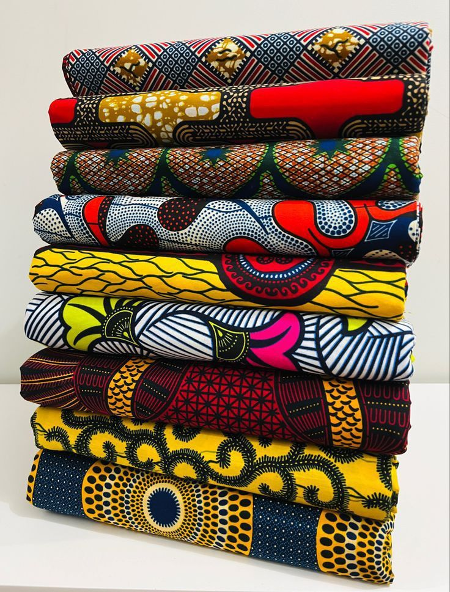

Tendances wax 2025 : motifs et couleurs à connaître

Les motifs qui dominent cette année
Les motifs géométriques inspirés des bijoux traditionnels reviennent en force, associés à des teintes indigo et terracotta.
Comment les associer
Un motif imposant se marie bien avec un tissu uni pour équilibrer une tenue, technique très utilisée par les couturiers dakarois.
Où se procurer ces tissus
Retrouvez notre sélection de tissu wax premium directement dans notre boutique en ligne.